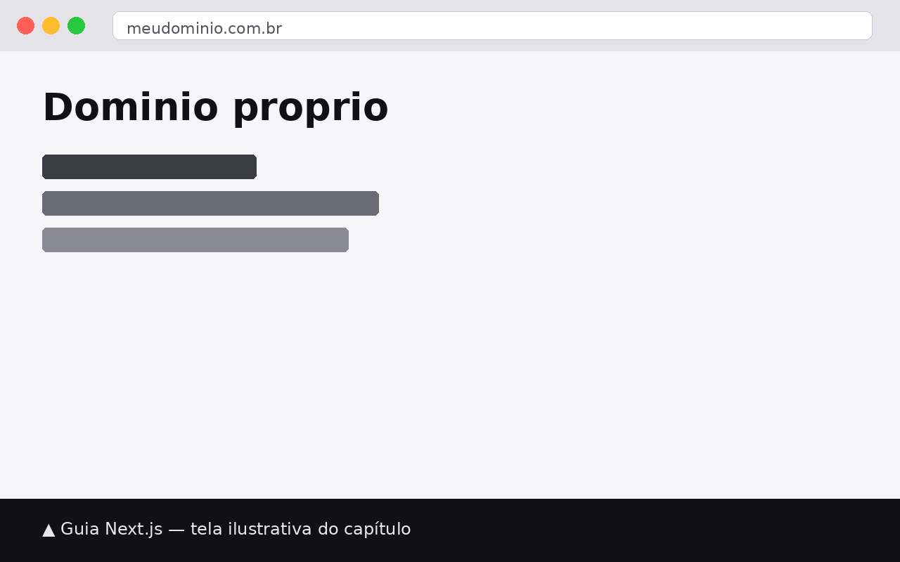

Domínio próprio: de meusite.vercel.app para meudominio.com.br
O endereço meu-app.vercel.app serve para testar, mas a loja da Ana precisava de endereço próprio no letreiro: lojinha.com.br. Nesta aula você aprende a apontar um domínio comprado (Registro.br, GoDaddy…) para o projeto na Vercel: adicionar o domínio no painel, configurar o DNS (A + CNAME), esperar a propagação e receber o SSL automático (cadeado verde).
- Comprar o domínio num registrador (Registro.br, Hostinger, GoDaddy, Cloudflare…)
- Adicionar o domínio em Vercel → Project → Settings → Domains
- Configurar DNS: registro
Ano raiz (@) →76.76.21.21eCNAMEemwww→cname.vercel-dns.com - Propagação de DNS (de minutos a 48h) e como testar com
dig/nslookup - SSL automático (Let's Encrypt) e redirect de
www↔ raiz - Domínio em múltiplos projetos e o apex (raiz) vs subdomínio
A ideia: trocar a placa da loja
O vercel.app é como uma placa provisória que a prefeitura empresta: funciona, mas não é seu endereço. Comprar o domínio é registrar o endereço no cartório (o registrador — Registro.br para .br): lá você diz "esse nome é meu". Depois, você precisa apontar a placa para a loja certa: isso é o DNS, o "GPS da internet" — você configura no painel do registrador para onde o nome manda (no caso, para os servidores da Vercel).
existem dois tipos de registro que interessam: o A (endereço numérico) para o domínio "raiz" (lojinha.com.br, também chamado apex) apontando para o IP da Vercel, e o CNAME (apelido) para o www (www.lojinha.com.br) apontando para cname.vercel-dns.com. Quando o DNS propaga, o pedido bate na Vercel, que reconhece o domínio, entrega o app e emite o certificado SSL sozinho (Let's Encrypt) — o cadeado verde aparece sem você mexer em nada.
Passo a passo
Registro.br (para .com.br):
1. crie conta → "Registrar domínio" → pesquise lojinha.com.br
2. pague a anuidade → vire o dono (CPF/CNPJ no WHOIS)
3. no painel do Registro.br: Servidores DNS → use os da Vercel
(ou mantenha os do registrador e crie os registros abaixo)
Vercel → seu projeto → Settings → Domains → Add → digite lojinha.com.br → Add → adicione também www.lojinha.com.br → a Vercel mostra "Valid Configuration" quando o DNS estiver certo
Tipo Nome Valor A @ 76.76.21.21 ← raiz (apex) vai para a Vercel CNAME www cname.vercel-dns.com ← www é apelido da Vercel (TTL padrão: 3600 — pode deixar; menor = propaga mais rápido)
# testar a propagação antes de believe: dig lojinha.com.br +short # deve devolver 76.76.21.21 dig www.lojinha.com.br +short # deve devolver cname.vercel-dns.com. nslookup lojinha.com.br # forçar DNS local (teste): edite /etc/hosts 127.0.0.1 lojinha.com.br # (só no seu PC, para testar)
Vercel → Domains: lojinha.com.br ✅ Valid Configuration 🔒 SSL ativo (Let's Encrypt) www.lojinha.com.br ✅ Valid Configuration 🔒 SSL ativo → a Vercel redireciona www → raiz (ou o contrário) automaticamente
Subdomínios e vários projetos
blog.lojinha.com.br CNAME cname.vercel-dns.com → projeto do blog app.lojinha.com.br CNAME cname.vercel-dns.com → projeto do app (dashboard) lojinha.com.br A 76.76.21.21 → projeto principal (site)
Missão: o componente abaixo monta o endereço do site a partir de um texto digitado, mas esquece o protocolo. Complete a constante const PROTOCOLO = '___' com https:// — sem ele o link vira busca no Google em vez de abrir o site. Rode digitando lojinha.com.br e veja o link ficar clicável. Depois clique em Verificar missão.
const PROTOCOLO = ''; // TODO: 'https://'
function App() {
const [dominio, setDominio] = React.useState('lojinha.com.br');
const url = PROTOCOLO + dominio;
return (
<div>
<h1>🌐 Meu domínio</h1>
<input value={dominio} onChange={e => setDominio(e.target.value)} />
<p>Endereço final: <a href={url}>{url}</a></p>
<p>{PROTOCOLO ? '✅ link clicável (https)' : '❌ sem protocolo: vira busca no Google'}</p>
</div>
);
}const PROTOCOLO = 'https://';
function App() {
const [dominio, setDominio] = React.useState('lojinha.com.br');
const url = PROTOCOLO + dominio;
return (
<div>
<h1>🌐 Meu domínio</h1>
<input value={dominio} onChange={e => setDominio(e.target.value)} />
<p>Endereço final: <a href={url}>{url}</a></p>
<p>{PROTOCOLO ? '✅ link clicável (https)' : '❌ sem protocolo: vira busca no Google'}</p>
</div>
);
}
Quando dá errado
DNS_PROBE_POSSIBLE / "não foi possível acessar esse site". Quase sempre é propagação — o DNS ainda não chegou no seu provedor. Teste com dig e espere (até 48h, geralmente minutos):$ dig lojinha.com.br +short (empty) ← ainda não propagou $ dig lojinha.com.br +short 76.76.21.21 ← propagou! já abre no navegador
@). Segundo o padrão DNS, o apex não aceita CNAME — use o registro A com o IP 76.76.21.21. E se o registrador não deixa mexer no DNS do apex, troque os nameservers para os da Vercel (ns1.vercel-dns.com, ns2.vercel-dns.com) ou use um registrador com ALIAS/ANAME (Cloudflare).Vercel: "Invalid Configuration" em lojinha.com.br Esperado: A @ → 76.76.21.21 (CNAME no apex não vale)
Exercícios
Para o domínio raiz (lojinha.com.br, o apex) apontar para a Vercel, usa-se:
O subdomínio www normalmente aponta para a Vercel com:
O cadeado verde (HTTPS) no domínio próprio na Vercel vem de:
Complete o comando que consulta o DNS de um domínio:
Complete o IP de destino do registro A (apex) da Vercel: